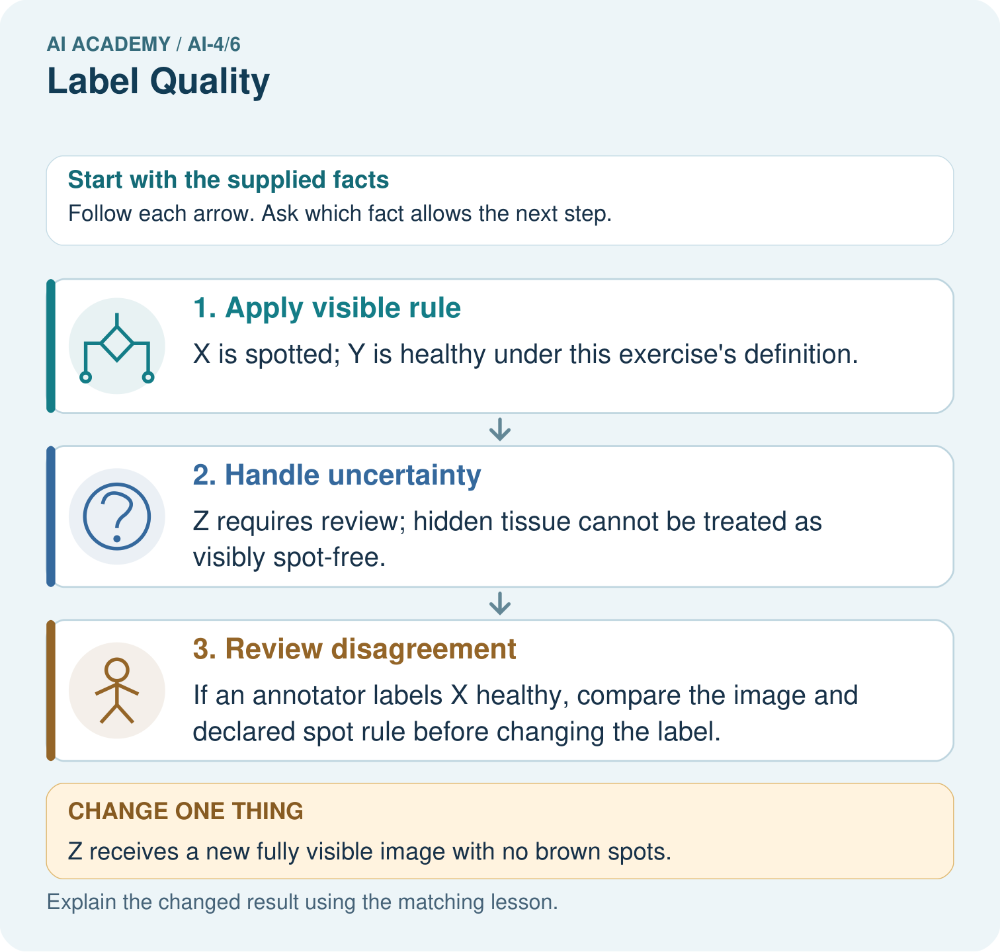
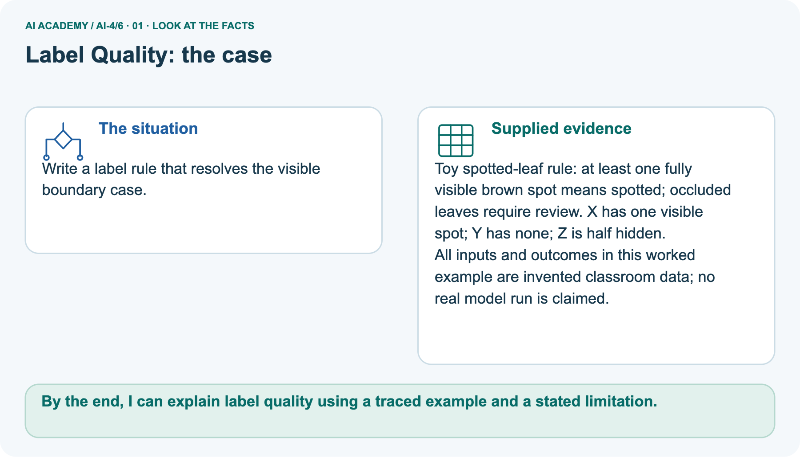
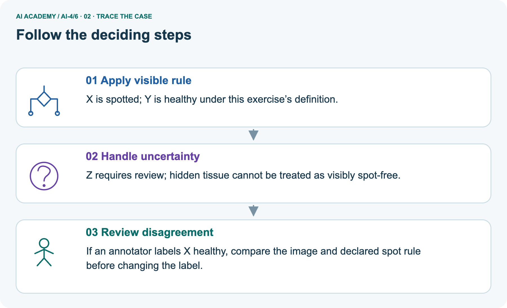
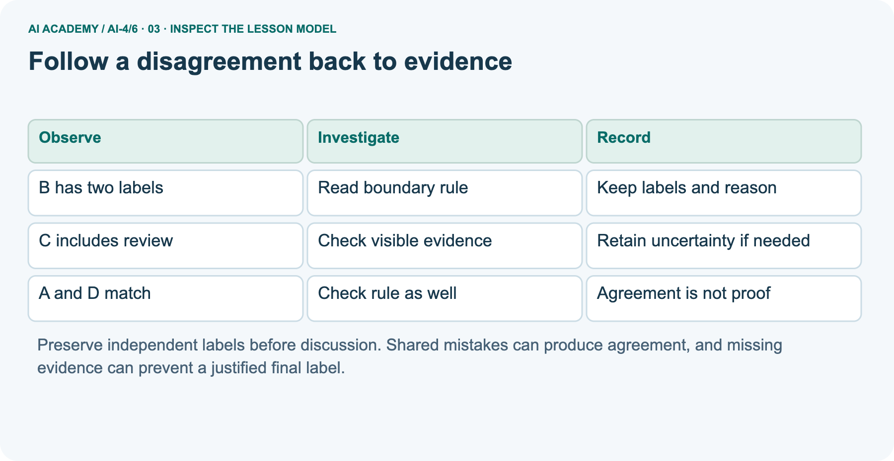
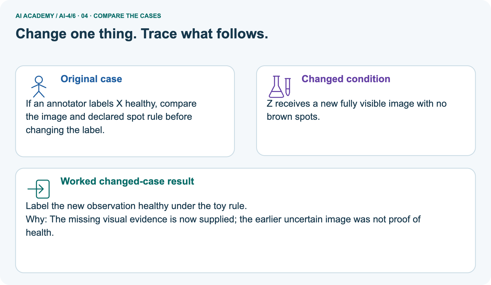
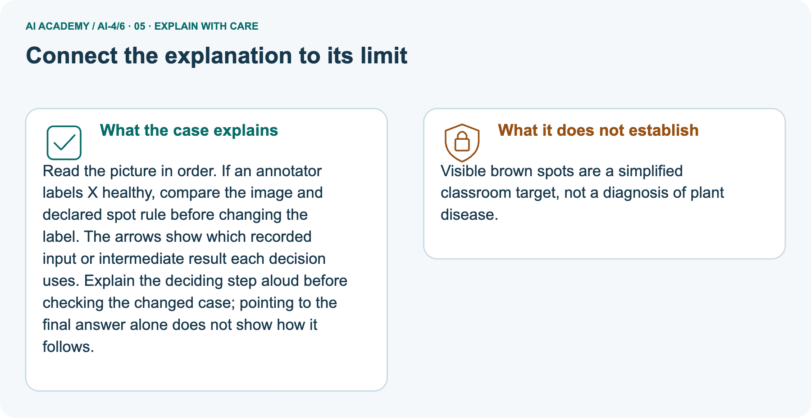
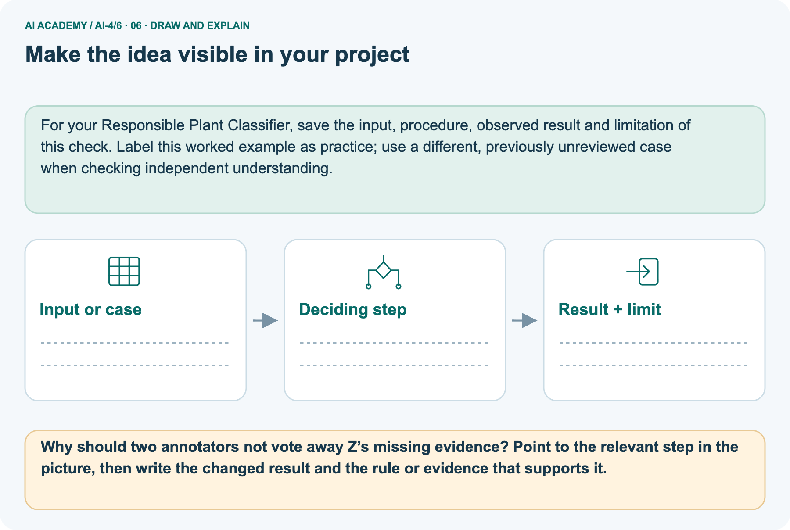

AI Academy · Level 4 · Grade 9 · Week 6 · Teacher guide
Label Quality
Learn to understand, design, build, test and explain AI systems responsibly.
Project: Responsible Plant Classifier
Teacher guide · 1 of 9
Label Quality
Prepare Label Quality: check the target, prerequisites, resources and adaptable teaching schedule.
Teach the learning cycle
Primary target: Write an observable label rule with boundaries and a review option
| Session | Sequence and minutes | Resources |
|---|---|---|
| Session 1 · Understand · 45 min | 0–7: recall and prerequisite; 7–15: inspect the concrete case and predict; 15–30: teacher models the worked trace; 30–40: learners explain a step using the text and visual; 40–45: check the core idea. | Sections 1–6; record the brief recall in the workbook. |
| Session 2 · Practise · 45 min | 0–5: retrieve the procedure; 5–15: W2 completion practice; 15–23: explain and check with a partner; 23–30: each learner answers the misconception check; 30–40: targeted reteaching or a harder variation; 40–45: prepare the investigation. | Sections 7–10; use the matching workbook W2 and misconception check. |
| Session 3 · Investigate and transfer · 45 min | 0–5: retrieve the decision rule; 5–20: investigate or trace; 20–30: start the independent case; 30–38: connect the project; 38–43: act on feedback; 43–45: plan the return check. | Use “Run the investigation”, “Connect your project”, “Show what you know”, “Study a complete case” and “Try a new case independently”. Give extra time for the full task set. If this week has a coding lab, use its named section; section numbers can change when extra explanations are included. |
This is a starting allocation of 135 minutes, not a validated duration. Preserve all named topics. Schedule extra time for connected examples, the full investigation, independent cases and project building.
Repeated copies of a case share one recorded attempt; they are not new evidence.
Retrieval answer guidance
Inspect Before Modeling
Without opening the old lesson, explain one key idea from Inspect Before Modeling. Give an example and a mistake that the idea helps you avoid.
Look for: Inspect row meaning missing values and repeated records
Reference example, not the only acceptable wording: One row is intended to represent one indoor practice trip.
The source is a teacher-authored fictional export for this lesson, duration uses minutes, and None means unknown rather than zero.
Classification or Regression?
Without opening the old lesson, explain one key idea from Classification or Regression?. Give an example and a mistake that the idea helps you avoid.
Look for: Identify a task from the meaning of its target
Reference example, not the only acceptable wording: Route type is classification because 1 and 2 encode categories. Whole-minute duration is regression because numerical differences measure time.
Exceeding 10 minutes is binary classification because the target is yes or no.
Use the student module and workbook section with this exact week title. The worked case, independent question and answers below form one aligned lesson sequence.
What the learner must demonstrate
Two labelers agree on 16 of 20 leaves. Both used a rule that mistakenly calls shadows 'spots'. Compute agreement and explain why it does not establish correct labels.
Concept to explain
Ambiguous definitions and inconsistent annotation place an upper bound on learnable performance.
| Term | Meaning |
|---|---|
| annotation | human assignment of a label |
| label rule | observable criterion for assigning a class |
| agreement | fraction of labels that match |
| adjudication | resolve disagreements using evidence |
Prepare the class
Use the supplied scenario, student illustrations and blank paper. For numeric work, offer counters or a calculator after learners show the setup. Fictional records are supplied; personal data and paid accounts are unnecessary.
Alternative compact allocation
This compact option is not the full-week schedule. Use the main teaching cycle and allow extra sessions for the investigation, independent work and project.
Allow 80 minutes: recall 8; explanation 12; worked demonstration 15; guided practice 20; independent assessment 15; project and reflection 10. Extend the lab into a second session when needed.
Preparation for the connected explanation
Teach two 45-minute sessions using invented scene descriptions. The target is applying a stated observation rule, not certifying real robot safety. Keep original independent labels separate from reviewed decisions.
Exact agreement includes review in the main exercise; review is a workflow status, not a physical lane class. Avoid calling annotator agreement accuracy.
Readiness answer
Unknown means the measurement is unavailable. Zero is a recorded value permitted by that schema; replacing unknown with zero invents evidence.
Printed lesson and workbook
Scene cards for the four worked examples and five independent cases
Optional Python 3 editor with no extra packages
Blank decision log with item originals evidence rule decision reviewer
End goal for the pictorial case
By the end, I can explain label quality using a traced example and a stated limitation.
This added worked case illustrates the week’s main idea. Retain all original and connected topics; schedule its practice within the teaching cycle.
Teacher guide · 2 of 9
Explain the mechanism
Model Label Quality using the supplied case, labelled mechanism and reasoning. Make the scope of each conclusion explicit.
Trace the information, fitted behavior, and evaluation proof separately.
Question to explain
QUESTION Measure annotator agreement and revise the labeling guide.
MODEL IDEA Ambiguous definitions and inconsistent annotation place an upper bound on learnable performance.
PROOF NEEDED Use an unseen case, visible calculation, error analysis, and a stated limitation.
How the mechanism works
UNDER THE HOOD Two annotators label 20 leaves and agree on 16. Observed agreement = 16 ÷ 20 = 80%.
Draw a fresh data → model → prediction → evaluation trace:
Predict first. Then check each step. A correct answer without visible evidence cannot be audited.
Step 1
STEP 1 Two annotators label 20 leaves and agree on 16.
Step 2
STEP 2 Observed agreement = 16 ÷ 20 = 80%.
Step 3
STEP 3 Most disagreements concern tiny spots near the boundary.
Step 4
STEP 4 Define a minimum spot rule, relabel a fixed subset, and report the new agreement.
CHECK Verify the denominator, unit, split, class definition, and data version before interpreting a score.
Recalculate, retrace, or restate the evidence independently:
Concrete teaching case
The teaching case
Two annotators disagree on three of ten leaves, especially mild spotting.
The teaching case
Improve label quality.
Exact explanation to model
Why the result follows
Define spotting operationally, inspect disagreement, use appropriate adjudication and document ambiguity. Agreement is 7/10, but agreement is not proof of truth.
Explain the added worked example
Explain the added worked example · 1
A model learns from examples with recorded targets. If two people interpret a target differently, their labels can mix different tasks.
This week you will write a label rule, compare independent labels and keep a record of disputed cases. We use invented corridor descriptions, not real images or a system for controlling a robot.
Explain the added worked example · 2
The classroom task is to label whether a marked practice lane is blocked in a supplied description.
Rule v1 says blocked means an object touches or crosses either lane boundary or lies inside the lane; clear means all objects are outside both boundaries and the entire lane is visible.
Use review if visibility or position is insufficient to decide. Review is a workflow status for a person to inspect, not a third physical condition of the lane.
These are exercise definitions, not real robot safety rules. Do not infer that a lane is physically safe from this label. The label describes only the supplied evidence under this version of the rule.
Two annotators used an earlier vague instruction, mark an obstructed lane, on four invented items. Their labels are shown in the code. A and D match; B and C differ.
Compare the same item IDs, not merely the first row in two differently ordered files.
Explain the added worked example · 3
The output is 2 4: two matching labels among four paired items, so observed exact agreement is 2/4 or 50 percent. Here review is included as a label value in the comparison: review versus clear is a disagreement.
This simple count is not model accuracy and does not establish which labels are correct.
The code assumes one valid pair per unique item ID and allowed label strings. It does not validate IDs or spelling. Use a nonempty paired set before calculating a fraction; zero paired items gives no agreement estimate.
Key terms
| Term | Meaning |
|---|---|
| Label rule | A written definition for assigning an outcome to an example |
| Annotator | A person who assigns labels using a stated rule |
| Agreement | How often annotators assign the same label to the same items |
| Adjudication | Reviewing evidence and rules to resolve a disputed label or retain uncertainty |
Model the reasoning aloud
Use the complete worked example below before asking learners to complete W2. Reveal a small part, invite a prediction, then explain the deciding step.
These teacher notes contain solutions; do not reveal the independent case answer during modelling.
Model the reasoning aloud · 4
For B, the full lane is visible and a wheel touches its boundary. One annotator treated touching as clear; the other treated it as blocked. Rule v1 explicitly includes touching, so the reviewed label is blocked.
Preserve both original labels and record the item, rule version, evidence, decision and reviewer. Do not silently overwrite the originals.
For C, a curtain hides part of the lane. One annotator guessed clear; the other requested review. Rule v1 requires full visibility for clear. The justified status remains review until sufficient evidence is available.
More votes cannot reveal the hidden area.
A decision log could say: B, original clear/blocked, wheel touches line, v1, blocked after review by the teacher. For C it could say: original review/clear, lane partly hidden, v1, unresolved review.
Add the labeling method and rule version to the dataset card.
| Thinking move | Teacher prompt |
|---|---|
| Plan | What is given? What is the question? Which procedure fits these facts? |
| Do | Point to each input and intermediate step in the worked trace. Name the rule that allows the next step. |
| Check | Does the output answer the question? Which assumption or limitation prevents a larger claim? |
Use the diagram and verbal explanation together. Ask learners to match a sentence to a specific visual step; do not assign learners fixed visual or auditory learning styles.
A pictorial worked case: Label Quality
Write a label rule that resolves the visible boundary case.
The facts we will use
Supplied facts
Toy spotted-leaf rule: at least one fully visible brown spot means spotted; occluded leaves require review. X has one visible spot; Y has none; Z is half hidden.
Supplied facts
All inputs and outcomes in this worked example are invented classroom data; no real model run is claimed.

Read the picture one step at a time
Why this result follows
Why the result follows
Read the picture in order. If an annotator labels X healthy, compare the image and declared spot rule before changing the label. The arrows show which recorded input or intermediate result each decision uses.
Explain the deciding step aloud before checking the changed case; pointing to the final answer alone does not show how it follows.
What this example does not establish
Keep the stated limit
Visible brown spots are a simplified classroom target, not a diagnosis of plant disease.
Change one thing in the pictured case
Change one thing
Change: Z receives a new fully visible image with no brown spots.
Predicted result
Prediction: Label the new observation healthy under the toy rule.
Why the result follows
Reason: The missing visual evidence is now supplied; the earlier uncertain image was not proof of health.
Ask while showing the picture
Ask while showing the picture · 5
Cover the result. Ask learners to name the inputs and predict the next step. Uncover one step, connect the icon to the actual procedure, and explain its evidence. Then change the supplied condition and compare.
The picture is a representation; it does not document execution of a real AI model.
Teacher guide · 3 of 9
Demonstrate and guide practice
Demonstrate Label Quality, reduce support deliberately and check individual reasoning before discussing answers.
Choose the pacing route
Compact alternative: this two-session sequence covers selected core tasks. Use the three-session weekly plan for the full lesson, independent transfer, feedback and project work; allow extra time for extensions.
Board sequence
1. Put the facts on the board
Write the given facts: Two annotators disagree on three of ten leaves, especially mild spotting.
2. State the decision to explain
Write the question to explain: Improve label quality.
3. Reveal the worked reasoning
Reveal after predictions: Define spotting operationally, inspect disagreement, use appropriate adjudication and document ambiguity. Agreement is 7/10, but agreement is not proof of truth.
Hold back the independent task
Keep for an independent attempt: Two labelers assign different species to the same image. Should you silently pick the label that helps the model score? Describe a better process.
Classroom dialogue
Ask the class
Ask: Which facts are given, and which would we have to assume? Learners mark relevant details before discussing answers.
Language to model
Say: Predict first. Show the rule, information path or calculation that would produce the result. A correct guess is not yet an explanation.
Reveal reasoning one step at a time. Explain why a tempting alternative fails. Write units and denominators for arithmetic, trace conditions for decisions, and identify supporting sources for claims.
In pairs, one learner solves while the other checks evidence; exchange roles. Remove the worked answer before independent assessment.
Model these guided questions
Guided: B is blocked because touching counts; C stays review because the lane is partly hidden. Excluding C leaves the original pairs A, B and D: 2 matches out of 3, about 66.7 percent.
Report the exclusion because this is a different subset from the four-item comparison, not newly correct labels. Exit: perfect agreement establishes matching labels on these items only. Both people can share a rule error.
Check their labels against the boundary evidence and v1 before making a correctness claim.
Case-specific teaching sequence
| Stage | Teacher action |
|---|---|
| Session 1 start to 7 minutes | Retrieve unknown versus zero. Ask why a label needs an explicit meaning before it becomes training data. |
| 7 to 18 minutes | Read v1. Apply inside, boundary, outside and hidden examples. Establish that these are fictional descriptions, not robot safety advice. |
| 18 to 32 minutes | Have pairs label fresh verbal examples independently before talking. Trace the supplied four-item code and complete W1 and W2. |
| 32 to 45 minutes | Compare B and C using evidence. Complete the guided denominator question and preserve the original pair list. |
| Session 2 start to 8 minutes | Retrieve agreement versus correctness. Show a shared mistake on a touching-boundary example. |
| 8 to 20 minutes | Model a decision-log entry without erasing original labels. Complete W3 and discuss a genuine rule revision. |
| 20 to 35 minutes | Collect W4 independently before support. Require both denominators, rule-based decisions and the unresolved review case. |
| 35 to 45 minutes | Use W5 and the exit response. After feedback, offer the fresh retry and record any support used. |
Reduce help deliberately
Completion practice
Completion task: Explain the output 2 4 for A through D. State the fraction and percent, whether review is included, and why this is not model accuracy.
Reasoning to listen for
Teacher check: Two of four matched items have identical annotator labels: 2/4 or 50 percent. Review is included in this exact comparison.
Neither annotator is established as a correct reference, and no model predictions are being scored.
Start by identifying the given inputs together. Leave the intermediate steps blank. If needed, model one step, then withdraw that help on the next step. Move to a full trace only when the partial trace is understood.
For partners, alternate explainer and checker; collect a response from every learner before discussion.
Individual reasoning check
Use the worked case for Label definitions and disagreement. Proposed explanation: “Agreement is accuracy”. Decide whether this explanation is supported.
Point to the step or supplied fact that decides; explain your repair if needed.
Expected repair
Expected correction: Agreement compares annotators. Accuracy would require predictions and an appropriate reference; shared mistakes can still match.
Collect explanations, not only yes/no votes. If a misunderstanding is common, re-model the relevant step for the class.
If it affects a few learners, give a short targeted group explanation while others solve a more demanding variation.
Pictorial practice question
Why should two annotators not vote away Z’s missing evidence? Point to the relevant step in the picture, then write the changed result and the rule or evidence that supports it.
Reasoned teacher answer
Agreement or a majority cannot reveal hidden tissue. Seek an adequate observation and preserve the review status until then. Changed-case check: Label the new observation healthy under the toy rule.
The missing visual evidence is now supplied; the earlier uncertain image was not proof of health.
Changed-case reasoning: Label the new observation healthy under the toy rule. The missing visual evidence is now supplied; the earlier uncertain image was not proof of health.
Collect each learner’s explanation before discussion. Use the first missing connection between input, deciding step and result to choose support. This question is worked-case practice, not fresh mastery evidence.
Teacher guide · 4 of 9
Run the weekly evidence lab
Run the Label Quality investigation and use the first unsupported step to choose a teaching response.
Keep the test conditions fixed, record every result, and change only one planned factor.
1. Write the hypothesis and expected evidence before running.
2. Label Lab: independently label twenty cards, compute agreement, cluster disagreements, revise one rule, and repeat.
3. Run one normal, one boundary, one missing, and one shifted case.
4. Calculate the metric from raw counts or row-level errors.
5. Interpret what changed, what did not, and what remains unsafe or unknown.
Make the lab runnable
Use the concrete case as the shared normal case and the independent question as a second case. Each pair creates a boundary or missing-information case and predicts its result before testing.
Keep the expected result separate from an observed mistake.
| Record | What to capture |
|---|---|
| Input or evidence | Exact data, instruction or claim |
| Expected result | Answer or safe fallback declared before the run |
| Observed result | Actual result, including errors |
| Explanation | Rule, calculation or evidence explaining the outcome |
| Next test | One justified change and a new prediction |
Diagnose and reteach
MISCONCEPTION TO REPAIR The model can learn the correct concept even when people label the same example differently.
For guessing, return to given facts and request a trace. For vocabulary without application, use one example and one non-example. For arithmetic errors, check the setup before the calculation.
Finish with a different uncoached case before recording mastery.
Address these additional misconceptions
Agreement is accuracy: Agreement compares annotators. Accuracy would require predictions and an appropriate reference; shared mistakes can still match.
Review means clear: Review preserves insufficient evidence. It is neither a negative label nor proof of a physical condition.
Voting removes uncertainty: Votes may select a decision policy but cannot create missing evidence. Preserve unresolved cases and document the policy.
Match the support to the first error
| What the response shows | Next teaching action |
|---|---|
| Missing or misread facts | Read the case aloud, mark supplied versus unknown facts, and let the learner restate it. |
| Wrong procedure | Return to the deciding step in the worked case. Contrast it with the proposed incorrect explanation. |
| Arithmetic or implementation error | Trace intermediate values or lines; preserve the first mismatch and retry that step. |
| Correct result without a reason | Ask for a trace and a changed case before marking independent understanding. |
| An unsupported wider claim | Ask which supplied evidence supports the claim and which further observation would be needed. |
Offer an oral explanation, drawing, enlarged visual or fewer examples when that removes a reading/writing barrier. Keep the same reasoning goal.
Stretch secure learners by changing a boundary or assumption and asking them to defend the effect, not simply by assigning more of the same questions.
Teacher guide · 5 of 9
Assess and explain the answers
Use the Label Quality questions, teacher keys and criteria after the relevant attempts. Previously discussed cases are practice; protect the separately selected independent task.
Worked case answer
Teacher key · Worked case answer
Define spotting operationally, inspect disagreement, use appropriate adjudication and document ambiguity. Agreement is 7/10, but agreement is not proof of truth.
Independent question
Independent question · withhold the key
Two labelers assign different species to the same image. Should you silently pick the label that helps the model score? Describe a better process.
Expected independent answer
Teacher key · Expected independent answer
Review the labeling rule and evidence, resolve or mark uncertainty, and document the decision independently of model performance.
What counts as evidence
| Criterion | 0 points | 1 point | 2 points |
|---|---|---|---|
| Result | Incorrect or absent | Partly correct | Correct with necessary conditions |
| Reasoning | No supporting trace | Some steps | Clear mechanism, calculation or source support |
| Limit | Overclaims certainty | Vague limitation | Relevant uncertainty or missing fact |
| Transfer | Copies without adapting | Adapts with prompts | Solves a changed case independently |
Use 6/8 as a classroom checkpoint, with 2 required for both Result and Reasoning. This is a proposed teaching rule, not a validated certification threshold.
Do not count a coached answer as independent mastery; correct unsafe or unsupported claims regardless of total.
Feedback
Ask the learner to find the evidence that challenges this claim: “The most useful label is whichever makes evaluation accuracy highest.” Keep the first attempt and an uncoached retry separate.
Original transfer answer
Teacher key · Original transfer answer
Agreement=80%. Shared misunderstanding can produce agreement on wrong labels. Clarify spotting criteria, inspect disputed and agreed examples, use appropriate adjudication and record ambiguity.
Do not treat majority agreement alone as ground truth.
Explanations for the additional workbook examples
W1 Use the boundary and review rules
Workbook question · W1
Under rule v1, label a wheel touching the boundary, an object entirely outside a fully visible lane, and a partly hidden lane. Explain the evidence for each.
Teacher reasoning · W1
Touching is blocked. An object entirely outside is clear only when all objects are outside and the entire lane is visible.
A partly hidden lane requires review because clear cannot be established from the available description.
W2 Interpret agreement
Workbook question · W2
Explain the output 2 4 for A through D. State the fraction and percent, whether review is included, and why this is not model accuracy.
Teacher reasoning · W2
Two of four matched items have identical annotator labels: 2/4 or 50 percent. Review is included in this exact comparison. Neither annotator is established as a correct reference, and no model predictions are being scored.
W3 Write a decision log
Workbook question · W3
For B and C, record original labels, visible evidence, rule version and reviewed decision. Explain why the original labels should remain available.
Teacher reasoning · W3
B: clear/blocked, wheel touches boundary, v1, blocked. C: review/clear, partly hidden lane, v1, unresolved review. Record the reviewer as well.
Originals preserve the independent disagreement and let another person audit how a decision was made.
W4 Apply the process independently
Workbook question · W4
New pairs are P blocked/blocked, Q clear/blocked, R review/review, S clear/clear, T blocked/clear.
P has an object inside; Q touches the line; R is partly hidden; S has all objects outside a fully visible lane; T has an object inside. Count agreement including review. Apply v1 to all five.
Then report agreement on the original pairs excluding any review status, with its denominator and limitation.
Teacher reasoning · W4
Three of five pairs match, or 60 percent. Reviewed results are P blocked, Q blocked, R review, S clear, T blocked. Excluding R leaves two matches among four pairs, or 50 percent.
The subset omits the uncertain case and does not establish correctness or general reliability. Preserve original labels separately from reviewed decisions.
W5 Draft and test a label rule
Workbook question · W5
Write a short v1 labeling instruction covering blocked, clear, the touching boundary and review. Add one boundary example. Explain why three people voting clear cannot settle a hidden lane.
Teacher reasoning · W5
A suitable instruction specifies the marked lane: inside or touching either boundary means blocked; clear requires all objects outside and full visibility; insufficient position or visibility means review.
A wheel touching the line is blocked. Votes supply no missing visual evidence, so a hidden lane remains review under v1.
Assess independent transfer
Independent question · withhold the key
Selected case: New pairs are P blocked/blocked, Q clear/blocked, R review/review, S clear/clear, T blocked/clear.
P has an object inside; Q touches the line; R is partly hidden; S has all objects outside a fully visible lane; T has an object inside. Count agreement including review. Apply v1 to all five.
Then report agreement on the original pairs excluding any review status, with its denominator and limitation.
Selected case answer
Teacher key · Selected case answer
Three of five pairs match, or 60 percent. Reviewed results are P blocked, Q blocked, R review, S clear, T blocked. Excluding R leaves two matches among four pairs, or 50 percent.
The subset omits the uncertain case and does not establish correctness or general reliability. Preserve original labels separately from reviewed decisions.
| Dimension | Evidence required |
|---|---|
| Explanation | Names the applicable idea or procedure and ties it to the supplied facts. |
| Trace and result | Preserves the given inputs and shows the relevant intermediate steps; distinguishes a prediction from an observed execution. |
| Limits | States the assumptions, missing evidence or conditions under which the result would change. |
Teacher key · Selected case answer
Record each dimension as not yet, with support, or independent. Accept a valid alternative procedure with a defensible trace.
Do not penalise an honestly recorded model failure if the learner correctly explains its evidence and limits.
Feedback that the learner uses
Name the earliest unsupported step and give one action to repair it. Have the learner make that repair now and explain why. Then assess the relevant skill on a fresh, fully specified case.
Confirm it was not previously practised with feedback; solve and check the new case before assigning it. A follow-up design prompt is a starting brief, not automatically an equivalent test.
Teacher guide · 6 of 9
Connect and extend learning
Connect Label Quality to Responsible Plant Classifier, adapt support and plan a later changed-case check.
Responsible Plant Classifier
Write the Plant Classifier label guide with positive, negative, borderline, and not-labelable examples.
Keep the decision, input, result, explanation and remaining limitation in the project evidence record. Retrieve this record next week rather than restarting the project.
Support and stretch
Use a tiny labelled dataset, explicit units and a named positive class. Stretch: require a baseline, held-out evaluation and subgroup or shifted-condition analysis with denominators.
Exit reflection
Ask for one decision the learner can now justify and one situation requiring more evidence or human review. Confidence ratings are separate from correct independent performance.
Bridge to the next week
Next: Week 7: Sampling and Intended Use. Retrieve today’s evidence and identify what carries forward and what is new.
Support and fresh reassessment
Use lane drawings and movable object cards for touching versus outside; cover part of the drawing for review. Provide blank log headings without decisions.
Extension: construct two annotators who agree perfectly while both break v1 and explain why the agreement fraction does not reveal the error.
Require W4 counts 3/5 including review and 2/4 excluding review, all five v1 decisions, and an explicit subset limitation.
Fresh retry: U clear/clear with all objects outside a fully visible lane; V blocked/clear with an object touching the boundary; W blocked/blocked with an object inside; X review/blocked with part of the lane hidden.
Original agreement is 2/4 or 50 percent; excluding X gives 2/3 or about 66.7 percent. Reviewed v1 decisions are clear, blocked, blocked, review. Require evidence for V and X before accepting the retry.
Week 6 covers splits and related examples. Carry forward item IDs, rule versions, original labels and review status so that related cases and labeling decisions remain traceable.
Plan the delayed return
Suggested return points in this level: ai-4/7, ai-4/9, ai-4/12. Use actual classroom dates, adjusting for holidays and gaps. One, three and six teaching weeks are scheduling choices, not a claimed optimal spacing.
At a delayed check, ask for the idea from memory and a changed application. Compare with the earlier independent response and record support used.
For a new level, revisit the previous capstone before checking the new prerequisites.
| Record | Teacher evidence |
|---|---|
| Learner code and date | |
| Concept and case used; prior exposure | |
| Explanation / trace / limits | |
| Support and first repair | |
| Changed case and delayed outcome | |
| Next teaching action |
Use the evidence to choose reteaching or the next step. A completed page, confidence rating or attractive project does not by itself demonstrate understanding.
Project evidence from this case
For your Responsible Plant Classifier, save the input, procedure, observed result and limitation of this check.
Label this worked example as practice; use a different, previously unreviewed case when checking independent understanding.
Teacher guide · 7 of 9
Prepare, teach and assess
Use this preparation summary alongside the detailed Label Quality lesson; it is a checklist rather than a replacement for the full sequence.
Teaching target
Teaching target: Write an observable label rule with boundaries and a review option
Prepare the labelled worked-case picture, the matching workbook, fictional input cards and a place for individual responses. Check a local Python 3 environment before class; have a paper-trace version ready.
| Session | Plan | Resources |
|---|---|---|
| Session 1 · Understand · 45 min | 0–7: recall and prerequisite; 7–15: inspect the concrete case and predict; 15–30: teacher models the worked trace; 30–40: learners explain a step using the text and visual; 40–45: check the core idea. | Sections 1–6; record the brief recall in the workbook. |
| Session 2 · Practise · 45 min | 0–5: retrieve the procedure; 5–15: W2 completion practice; 15–23: explain and check with a partner; 23–30: each learner answers the misconception check; 30–40: targeted reteaching or a harder variation; 40–45: prepare the investigation. | Sections 7–10; use the matching workbook W2 and misconception check. |
| Session 3 · Investigate and transfer · 45 min | 0–5: retrieve the decision rule; 5–20: investigate or trace; 20–30: start the independent case; 30–38: connect the project; 38–43: act on feedback; 43–45: plan the return check. | Use “Run the investigation”, “Connect your project”, “Show what you know”, “Study a complete case” and “Try a new case independently”. Give extra time for the full task set. If this week has a coding lab, use its named section; section numbers can change when extra explanations are included. |
Before class, solve the supported practice: Explain the output 2 4 for A through D. State the fraction and percent, whether review is included, and why this is not model accuracy.
Supported practice answer
Reasoned practice answer: Two of four matched items have identical annotator labels: 2/4 or 50 percent. Review is included in this exact comparison.
Neither annotator is established as a correct reference, and no model predictions are being scored.
Check every learner before discussion: Use the worked case for Label definitions and disagreement. Proposed explanation: “Agreement is accuracy”. Decide whether this explanation is supported.
Point to the step or supplied fact that decides; explain your repair if needed.
Repair the misconception
Misconception repair: Agreement compares annotators. Accuracy would require predictions and an appropriate reference; shared mistakes can still match.
Support without giving away the answer
Support: read the exact case aloud, enlarge the labelled picture, supply input cards and model only the first deciding step. Accept a spoken explanation or drawing; retain the reasoning goal.
Extend the reasoning
Extension: Z receives a new fully visible image with no brown spots. Require a prediction and a reason before comparing. Expected result: Label the new observation healthy under the toy rule.
Reason: The missing visual evidence is now supplied; the earlier uncertain image was not proof of health.
Protect the independent attempt
Independent assessment: withhold the reserved answer until the learner has attempted the new case. Record support separately from correctness.
| Criterion | Not yet | With support | Independent |
|---|---|---|---|
| Explanation | Names an answer without a deciding fact | Uses a hint to link fact and decision | Explains the deciding fact in own words |
| Trace or test | Cannot connect input and result | Completes steps with prompts | Traces or tests a changed case accurately |
| Limits and revision | Claims more than evidence supports | Names a limit after a prompt | States a defensible limit and useful next test |
Project checkpoint
Project checkpoint: Frame the need. Name the user, the problem, allowed inputs and a safe simple starting method.
Use the weekly teacher answer for topic-specific reasoning. A saved progress tick is an activity record; judge mastery from the learner’s explanation and evidence.
Teacher guide · 8 of 9
Use feedback, labs and repair paths
Use feedback, earlier review and portfolios purposefully. Apply the coding routine only when this lesson has an executable lab.
Use the two formative questions as supported practice, not as independent mastery scores. Discuss the deciding evidence rather than accepting a guessed selection.
The feedback comes from the reviewed public worked case. Do not reveal the separately reserved independent teacher answer until the learner has attempted that case.
Ask students to predict before running code. Preserve errors and actual outputs; collect a changed test and an explanation. The branch-boundary and indexing lessons deliberately include failure cases.
Use the earlier worked-explanation links to address a specific missing building block, then return to the current question. Adapt this suggestion after observing the learner; it is not an automatic diagnosis.
Collect the completed-work portfolio as evidence. Record support separately from correctness, and assess explanation, trace/test and limitations. Progress ticks and quiz selections alone do not establish mastery.
Teacher guide · 9 of 9
Visual concept journey
Show one Label Quality graphic at a time, request a prediction and discuss its trace before the independent assessment.
Use one picture at a time. Hide a worked result before asking for a prediction, then reveal it for feedback. These are supported teaching cases; retain the separate independent assessment for a fresh first attempt.
01. Label Quality: the case

Write a label rule that resolves the visible boundary case. Supplied facts: Toy spotted-leaf rule: at least one fully visible brown spot means spotted; occluded leaves require review.
X has one visible spot; Y has none; Z is half hidden. All inputs and outcomes in this worked example are invented classroom data; no real model run is claimed.
Point to the given fact that matters most. Explain why it matters.
Discuss while showing the picture
Teacher prompt: Point to the given fact that matters most. Explain why it matters. Ask learners to describe one label or arrow in ordinary words. Use the adjacent transcript if the image is difficult to see.
02. Follow the deciding steps

Apply visible rule: X is spotted; Y is healthy under this exercise’s definition. → Handle uncertainty: Z requires review; hidden tissue cannot be treated as visibly spot-free. → Review disagreement: If an annotator labels X healthy, compare the image and declared spot rule before changing the label.
Point to each numbered stage and explain which recorded input it uses.
Discuss while showing the picture
Teacher prompt: Point to each numbered stage and explain which recorded input it uses. Ask learners to describe one label or arrow in ordinary words. Use the adjacent transcript if the image is difficult to see.
03. Follow a disagreement back to evidence

Follow a disagreement back to evidence. B has two labels | Read boundary rule | Keep labels and reason. C includes review | Check visible evidence | Retain uncertainty if needed.
A and D match | Check rule as well | Agreement is not proof
Read the labels and values. Explain the relationship the model shows.
Discuss while showing the picture
Teacher prompt: Read the labels and values. Explain the relationship the model shows. Ask learners to describe one label or arrow in ordinary words. Use the adjacent transcript if the image is difficult to see.
04. Change one thing. Trace what follows.

Original case: If an annotator labels X healthy, compare the image and declared spot rule before changing the label. Changed condition: Z receives a new fully visible image with no brown spots.
Expected result: Label the new observation healthy under the toy rule. Reason: The missing visual evidence is now supplied; the earlier uncertain image was not proof of health.
Predict before checking the worked changed-case result. Name what changed and what the supplied facts allow you to conclude.
Discuss while showing the picture
Teacher prompt: Predict before checking the worked changed-case result. Name what changed and what the supplied facts allow you to conclude. Ask learners to describe one label or arrow in ordinary words.
Use the adjacent transcript if the image is difficult to see. Changed-case reasoning: The missing visual evidence is now supplied; the earlier uncertain image was not proof of health.
05. Connect the explanation to its limit

Read the picture in order. If an annotator labels X healthy, compare the image and declared spot rule before changing the label. The arrows show which recorded input or intermediate result each decision uses.
Explain the deciding step aloud before checking the changed case; pointing to the final answer alone does not show how it follows. Limit: Visible brown spots are a simplified classroom target, not a diagnosis of plant disease.
Explain the case, then point to a limit on the claim.
Discuss while showing the picture
Teacher prompt: Explain the case, then point to a limit on the claim. Ask learners to describe one label or arrow in ordinary words. Use the adjacent transcript if the image is difficult to see.
Keep the stated scope: Visible brown spots are a simplified classroom target, not a diagnosis of plant disease.
06. Make the idea visible in your project

For your Responsible Plant Classifier, save the input, procedure, observed result and limitation of this check.
Label this worked example as practice; use a different, previously unreviewed case when checking independent understanding. Draw your input, deciding step, result and limit.
Supported question: Why should two annotators not vote away Z’s missing evidence? Point to the relevant step in the picture, then write the changed result and the rule or evidence that supports it.
Draw your project trace and justify the deciding step using evidence.
Discuss while showing the picture
Teacher prompt: Draw your project trace and justify the deciding step using evidence. Ask learners to describe one label or arrow in ordinary words. Use the adjacent transcript if the image is difficult to see.
Supported practice key: Agreement or a majority cannot reveal hidden tissue. Seek an adequate observation and preserve the review status until then. Changed-case check: Label the new observation healthy under the toy rule.
The missing visual evidence is now supplied; the earlier uncertain image was not proof of health.